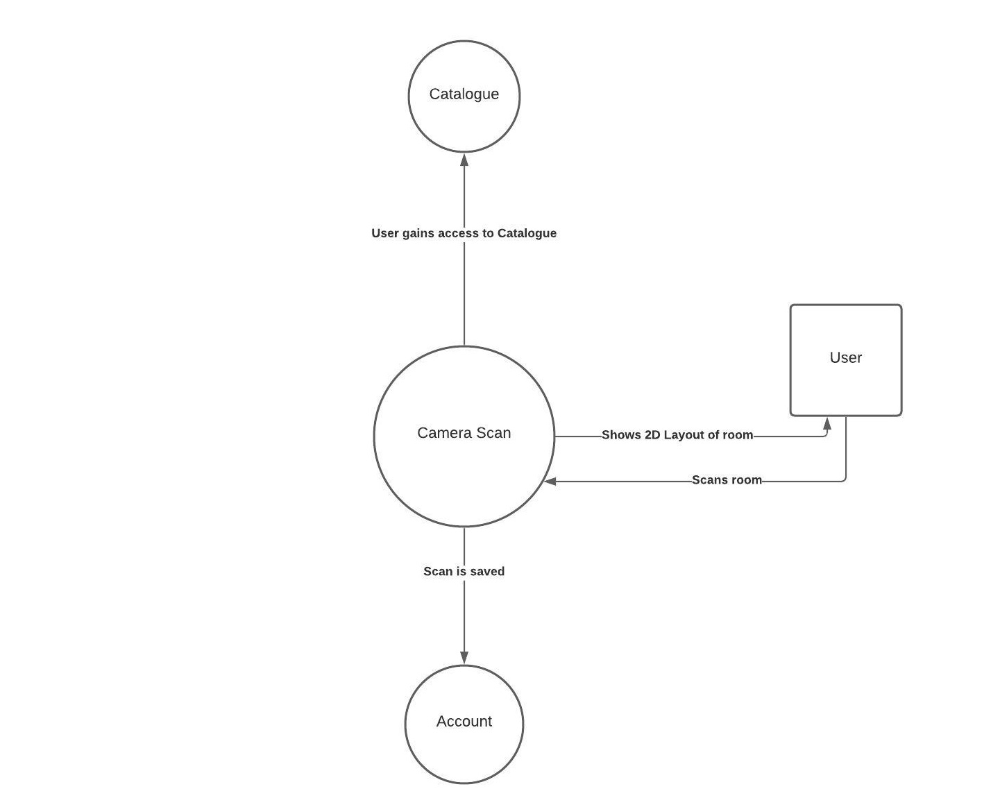

Description
FlippingRooms allows the user to immerse themselves in an augmented reality (AR) when it comes to remodelling and redesigning their own rooms. With the camera feature installed in the application, the user is able to take a photo of the size of the room that they are planning to redecorate. In addition to that, if the camera is unable to capture every angle of the room, the user has the alternative to resize the room manually. The user has the choice to set the room to scale for easier manoeuvring when it comes to picking the right couch or right bedside table.
After decorating the room to the preferred choice of the user, the user is able to view the room from different perspectives. When the user is using the camera feature in FlippingRooms, the user can view the room from the side and top angle to ensure that this is the ideal final look for the specific room being remodelled. The user is allowed to look at a before and after layout as well.
|
Anasta is shopping for some furniture online. He is
looking for furniture to remodel his current home but
is unable to envision how the layout of the room is
going to look like. Anasta tries to look for an app
on his phone that would allow him to remodel the room
without physically moving the furniture around. He stumbles
upon FlippingRooms which has the feature that can
scan a room by using his phone camera. The camera
feature is able to detect the dimensions of the room and
he is able move the furniture around on his phone.
|
1. Anasta clicks on FlippingRooms app
2. Anasta logs in / signs up on the app
3. Anasta clicks on the 'Start remodelling'button
4. Anasta clicks on the 'Scan with camera'button of the features page
5. Anasta starts moving the phone to scan the surroundings of the room
6. Anasta starts editing the room once it is scanned
|
System Context Diagram

Testing
Test for the ability to utilize the camera on different devices
Validate if room measurements are accurate
Test manual specification of room size
Take picture of various room sizes to test automatic scaling functionality
Confirm if room can be viewed at the alternative top and side viewing angles
If device does not have a functioning camera/permission is not granted to use the camera, ensure error message is displayed